ギターの弦をはじくと音が出ます。このとき、弦は細かくふるえています。音さやギターの弦のように、振動して音を出すものを音源といい、音を出している音源は振動(ふるえること)しています。
音さ(U字形の金属の棒)をたたいて音を出し、水面に近づけると、水しぶきがあがります。これは、音を出している音さが振動しているからです。
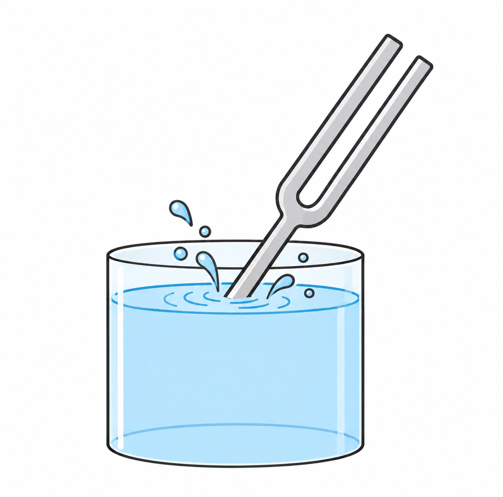
音源の振動は、まわりの空気を押し縮めて、濃いところと薄いところをつくります。この濃い・薄いが次々と伝わり、私たちの鼓膜(耳の中の膜)を振動させるので、音が聞こえます。
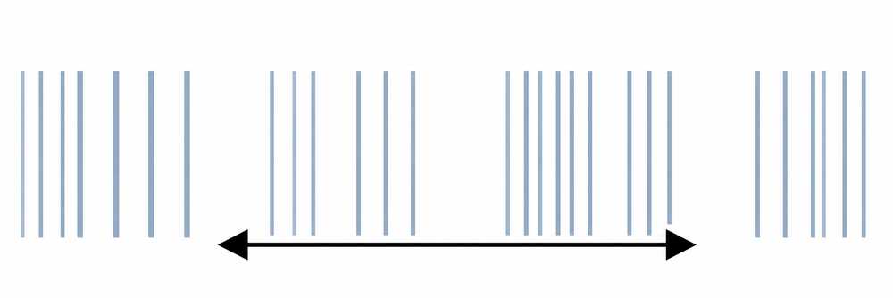
▶ 例題1 空気をぬくと音はどうなる?
丸底フラスコの中に鈴をつるします。そのままフラスコを振ると、鈴の音が聞こえます。真空ポンプにつないで中の空気をぬき、ピンチコックをしめてフラスコを振ると、鈴の音は聞こえなくなります。
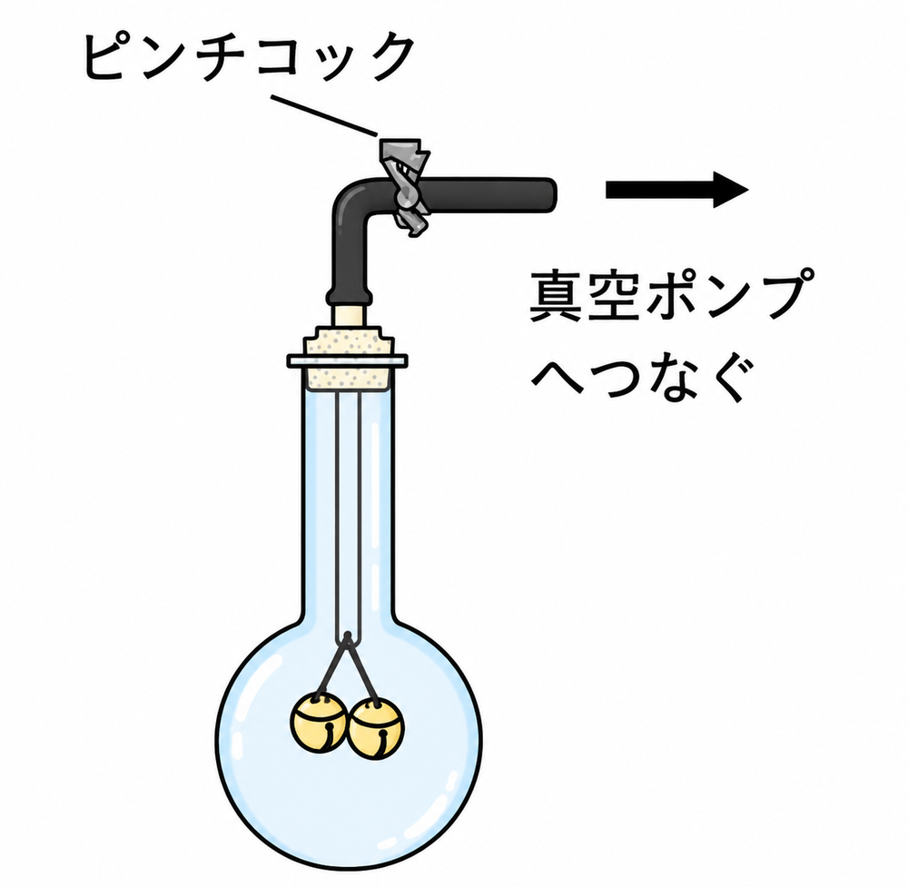
理由:フラスコ内の空気がなくなり、鈴の音の振動が伝わらなかったためです。
結果:「音は空気中をつたって聞こえる」ということが言えます。
- 音源……音さやギターの弦のように、振動して音を出すもの
- 音は、空気の濃い・薄いが次々と伝わり、鼓膜を振動させて聞こえる
- 空気をぬくと音は聞こえない → 音は空気中をつたって聞こえる
ポンプで空気をぬいていきましょう。フラスコの中の空気(青い点)と、鈴の音の大きさを見てください。
🏆 ベストタイム
▶ 例題2 同じ高さの音がでる音さAとBをむかいあわせにおき、Aをたたく
①図1のようにむかいあわせにおき、Aをたたくと、Bが鳴り出します。
②図2のように間に板をはさんでAをたたいても、Bは鳴りません。
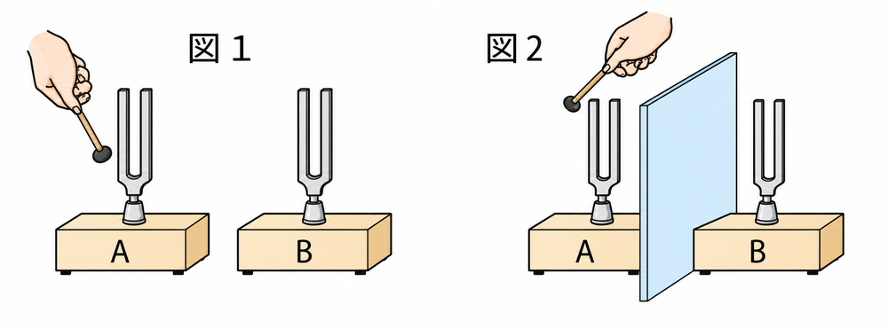
図1では、Aの音さからの音は空気を振動させ、Bに伝えます。図2では、板が空気の振動をさえぎるので、Bに伝わらず、Bは鳴りません。
同じ高さの音を出す音さAの振動が音さBに伝わり、Bが鳴ることを共鳴といいます。
- 同じ高さの音がでる音さは、一方をたたくと、もう一方も鳴り出す(共鳴)
- 音の振動は空気を伝わる。間に板をはさむと、振動がさえぎられてBは鳴らない
音さAをたたいています。間に板をはさんで、音さBがどうなるか見てみましょう。
🏆 ベストタイム
▶ 例題3 モノコードで音の高さや大きさを調べる
1本の弦を使って、音の高さや大きさを調べる器具をモノコードといいます。弦の長さ・太さ・弦を引っぱる力(張力)を変えると、音の高さが変わります。
【長さ】図3で、ABの弦はBCの弦より短いとします。Pの部分をはじくと高い音が、Qの部分をはじくと低い音が出ます。弦が短いほど高い音が出ます。
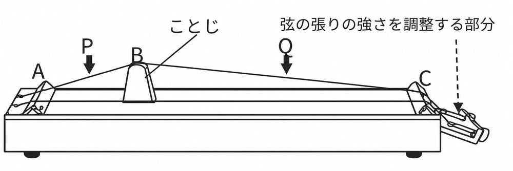
【張力】図4で、おもりを重くしていくと、弦を引っぱる張力は強くなり、音は次第に高くなります。
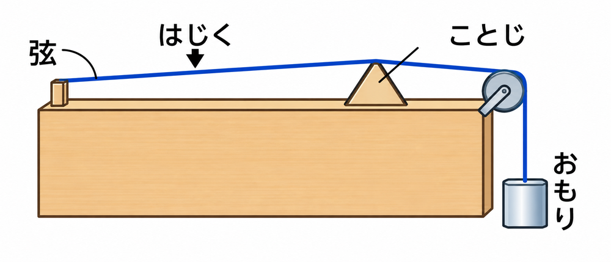
【太さ】図5のように、太い弦と細い弦を同じ張力のもとにそれぞれはじくと、太い弦は低い音、細い弦は高い音が出ます。
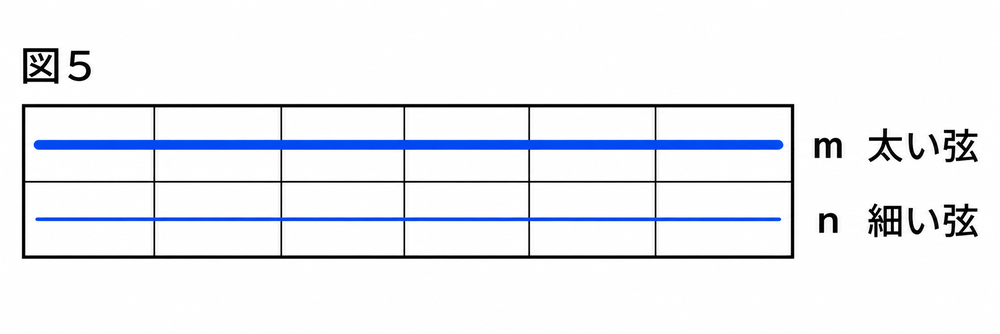
【大きさ】弦を振動させるとき、弦の大きなふれ(最も大きく振動する部分)の大きさを振幅といいます。図でAはBより振幅が大きいので、Aのほうが大きい音です。振幅が大きいほど、大きい音が出ます。
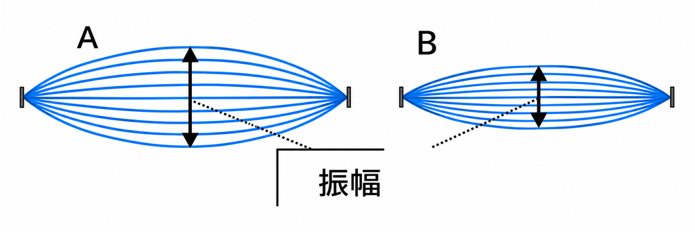
- 弦が細いほど、高い音が出る
- 弦が短いほど、高い音が出る
- 弦を引っぱる張力が大きいほど、高い音が出る
- 振幅が大きいほど、大きい音が出る
スライダーを動かして、音の高さがどう変わるか調べましょう。
※実際の実験と同じ向きの変化が分かるように、おおよその高さで表しています。
🏆 ベストタイム
音の高さや大きさは、マイクをつないだオシロスコープの波の形で見ることができます。
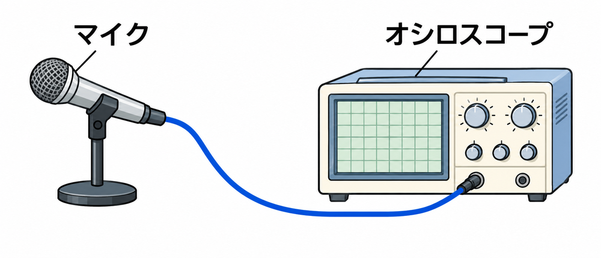
1秒間に振動する回数を振動数といい、単位はHz(ヘルツ)で表します。人が聞くことのできる音の振動数は、約20Hzから20,000Hzです。
下の図のAからDは、オシロスコープに映った波です。
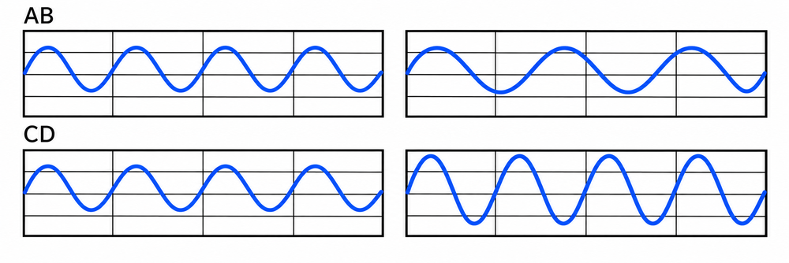
AとBは、振幅が同じなので、同じ大きさの音です。AはBより高い音です。波の数(振動数)がAのほうが多いからです。
AとCは、振幅も振動数も同じなので、同じ大きさで同じ高さの音です。
AとDは、振動数が同じなので、同じ高さの音ですが、振幅がDのほうが大きいので、AよりDのほうが大きい音です。
▶ 音の速さ
音は空気中を、約340m/秒の速さで伝わります(気温15℃のとき)。
▶ 例題4 花火の音
花火が夜空で爆発して3秒たったときに音がしました。観測地点から花火が爆発した場所までの距離は何mでしょうか。音の速さを340m/秒とします。
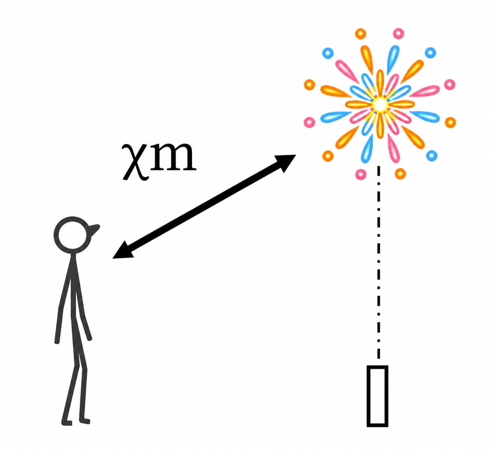
解)距離＝音の速さ×時間 なので、340×3＝1020 答)1020m
- 振動数が多いほど高い音、振幅が大きいほど大きい音
- 振動数……1秒間に振動する回数。単位はHz(ヘルツ)
- 人が聞ける音は約20Hz〜20,000Hz
- 音の速さは約340m/秒(気温15℃のとき)。距離＝音の速さ×時間
ボタンで、図の波A〜Dを再現できます。スライダーで自由に変えることもできます。
※画面の波は見やすいように、実際の音よりずっとゆっくりした波で表しています。
解)340×［ 3 ］＝［ ］m